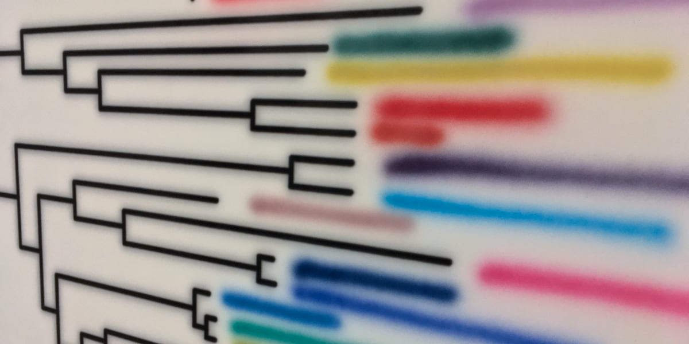
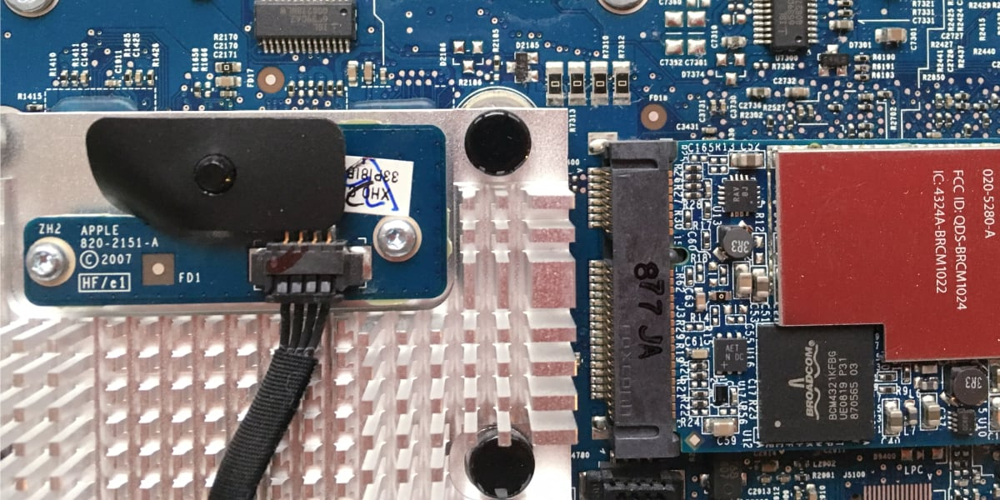

Transforming Data into Strategic Advantage for Sports & Higher Education
Expert in building data-driven cultures that make complex data actionable
About | Portfolio & Leadership | Expertise | Insights | Connect
From Complex Data to Clear Direction
I believe that the intersection of analytics and leadership creates transformational opportunities in sports and higher education. With over 20 years of experience building analytics programs and leading data-driven initiatives, I help organizations see beyond the numbers to make confident, strategic decisions.
My approach combines rigorous statistical analysis and machine learning with a deep understanding of organizational culture. Whether optimizing roster decisions for sports teams or predicting student success in higher education, I focus on building sustainable analytics capabilities that empower teams at every level.
Currently, I lead the Predictive Analytics Group at Michigan State University‘s Enrollment Services, where I’ve developed evidence-based methods that improved the Office of Admissions’ ability to identify high-likelihood of enrollment communities for recruitment and identified in January approximately 80% of the admitted applicants who are likely to enroll. I also teach in MSU’s Sports Analytics Graduate Certificate program, guiding the next generation of analytics leaders through real-world applications.
I’m passionate about partnering with organizations ready to transform their approach to data—whether through strategic consulting engagements or by joining teams committed to building truly data-driven cultures.
The Journey
My path to analytics leadership began in scientific research, where I learned the rigor of data-driven discovery. Since founding exeResearch in 2008, I’ve applied these principles across industries, ultimately finding my calling at the intersection of sports, education, and analytics.
Portfolio & Leadership
From predictive frameworks to team leadership strategies to custom R packages, explore the tools and approaches I’ve developed solving real analytics challenges in sports and higher education.
Expertise
Sports Analytics Solutions
- Roster optimization and player evaluation systems
- Performance prediction and strategic planning
- Deep expertise in translating complex metrics into coaching advantages
– Ask me about bridging the gap between analytics insights and on-field/court application
Higher Education Analytics
- Enrollment optimization and student success modelling
- Institutional effectiveness measurement
- Skilled at balancing academic values with data-driven insights
– Let’s discuss how analytics transformed our recruitment strategy

Analytics Strategy & Implementation
- Design and deploy analytics frameworks that align with organizational goals
- Transform raw data into decision-ready insights for leadership teams
- Proven track record of delivering actionable insights that drive strategic decisions
– I’d love to share how we built analytics capabilities from the ground up

Data-Driven Culture Development
- Build analytics capabilities across all organizational levels
- Create sustainable processes for data-informed decision making
- Experienced in transforming skeptical stakeholders into analytics champions
– Ask me about the time we turned skeptics into analytics believers
The Model Scout
Where modelling meets strategy. Where data drives decisions.
Join me for regular insights on the intersection of predictive analytics, culture and leadership, and sports and higher education. Each post combines technical rigor with practical application; because the best insights are the ones that actually get implemented.
- Sports Analytics Deep Dives - From player evaluation models to game strategy optimization
- Higher Ed Predictive modelling - Enrollment forecasting, retention analysis, and institutional research
- Building Analytics Teams - Practical leadership insights for data-driven organizations
- Technocrat Perspectives - Insights and musings of today’s tech landscape
Discover:
- Real-world examples and case studies (anonymized but authentic)
- Technical approaches that actually work
- Leadership strategies for data-driven cultures
- Code and methods you can implement immediately
Let’s Start a Discussion!
Interested in how exeResearch can help you reach that next level?